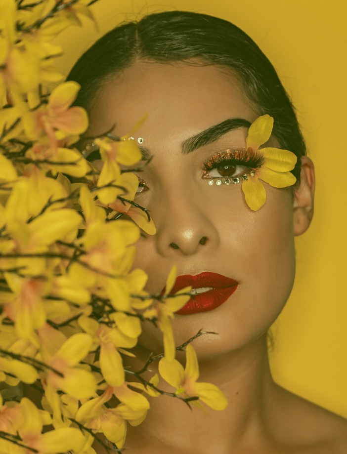

The secret of
great style is
to feel good in
whatever you wear
These varied projects demonstrate some of the
range that Fashion photography has to offer—
from artful depictions of reality to the further
bounds of dreams and fantasy.
PHOTOGRAPHY 2022
Attempting to label or categorise many forms of
art is dangerous and frequently misguided. In the
context of Fashion photography, the term
"conceptual" appears to be a slightly loaded but
meaningless catch-all rather than a description of
a movement, tendency, or approach.
So, with that acknowledgement, these 13 diverse
projects show some of the range that Fashion
photography has to offer
—from artful depictions of reality to the further
reaches of dreams and fantasy.
These images began to form not only a person's
living environment, but also an excursion into the
mental landscape: reminiscences, reveries, fears,
and dreams.
Jack Rinaldi
PHOTOGRAPHY 2022
PHOTOGRAPHY 2022
02
Dream Reality in another world
Photographer
Julie Mars
Model
Renaisha Vanderwill
This dark, mysterious visual story has
no narrator — is it a cinematic
sequence of a child's memories, a
dream, a diary, a nightmare?
Your other selves are out there
somewhere—alternative versions of
you from moments that could have
been or will be in the future. But
what if all of these selves came
together at the same time...? →
04

Series Name
Behind my House
Photographer
Allison Montgomery
Model
Dina Moore
We all live under a single, shared sky,
and these images demonstrate how
notions of national identity can be
abandoned when we recognise the
unifying nature of our shared
environment. It is meant to be a living
body of images, a place to bounce
and veer and double back while
maintaining the sensation of being in
a familiar place without specificity.
03
Series Name
Absence of Subject
Photographer
Steve Malison
Model
Julian Shane
This elaborate photo story elicits
dream-like reveries that echo deep
within the human psyche, just as all
fairytales are rooted in psychological
fears, hopes, and real emotions. A
labour of love that incorporates
meticulous costume into imaginative
tableaux.